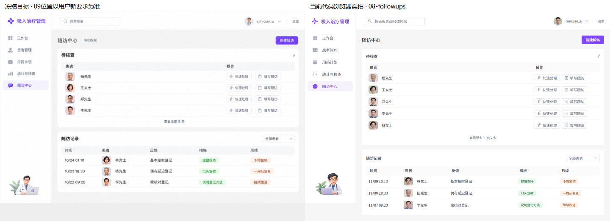
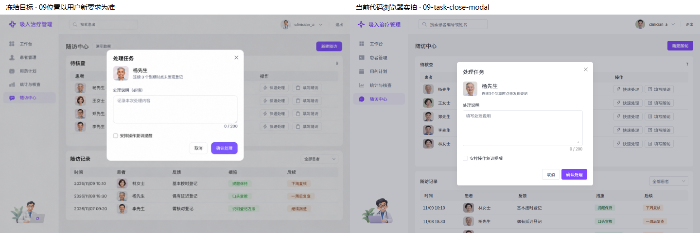
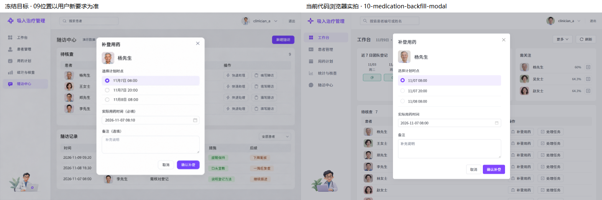
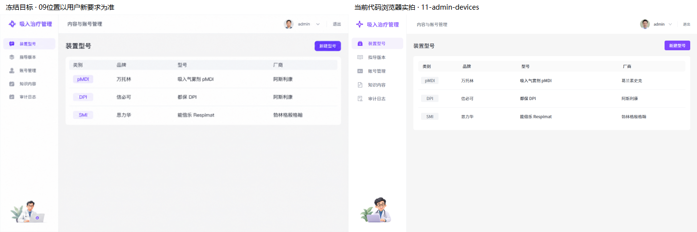

09按整个视口居中。00–07已获用户批准；本轮保留原页面与素材。
左侧为冻结目标，右侧为当前代码浏览器截图。数据、五行展开、临床语义与用户新要求优先；不声明逐像素100%一致。
完整实拍 · 真实后端只读实拍 · 手机实拍 · 1280实拍




补登时点提交锁 · 未知结果核对 · 短屏居中与底部按钮 · 普通患者缺照片回退
写操作使用隔离演示接口。真实后端未提交临床修改。演示人像为已批准虚构素材，普通患者没有照片时显示中性占位。剩余12–15保持原实现。